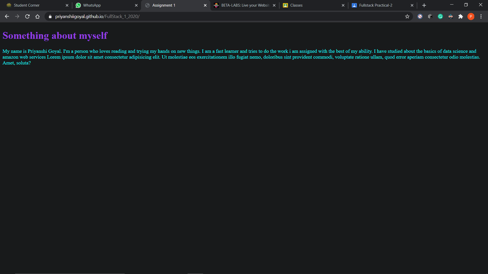

Front-end web development is everything involved in programming the user interface of a web application. Typically it refers to the Hypertext Markup Language (HTML), Cascading Style Sheets (CSS) and JavaScript portion of website production as opposed to the database of server-side programming. It encompasses everything from building a simple page of HTML text to creating complex, responsive HTML5 websites designed to be accessed via various different browsers, devices and screen
